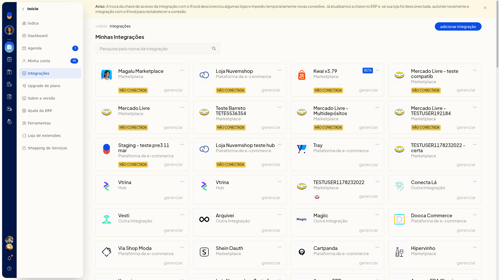
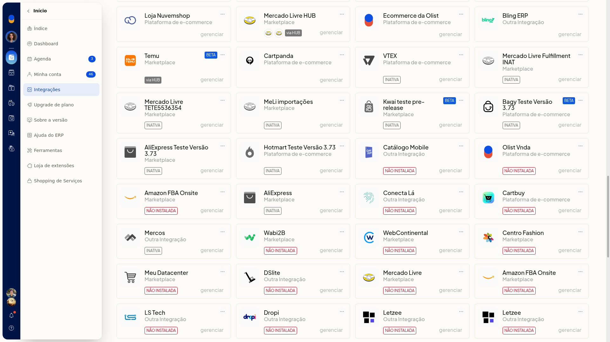
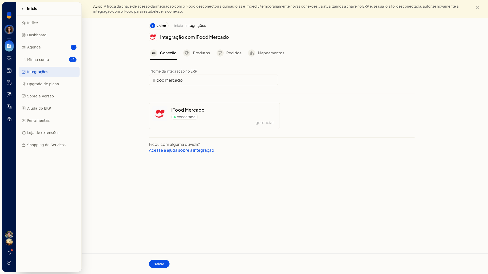
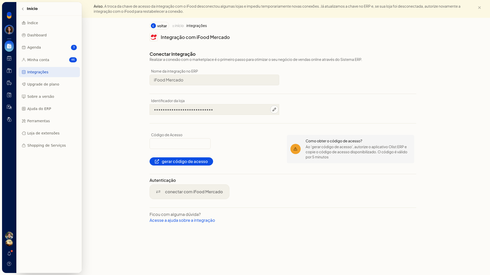
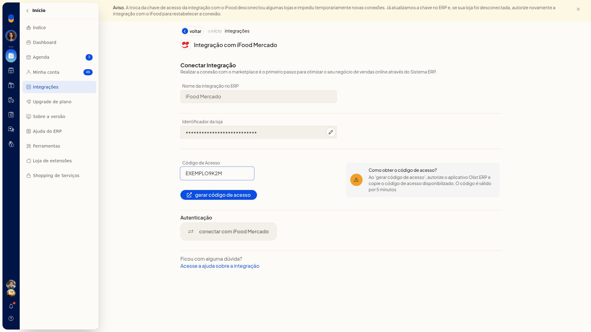
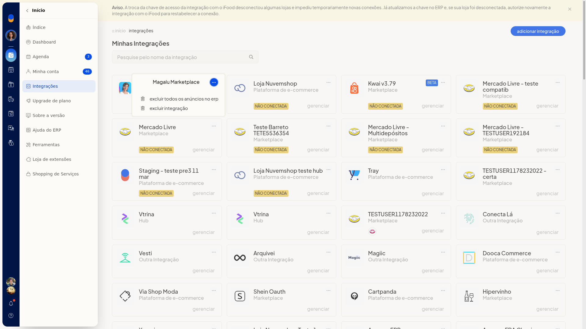
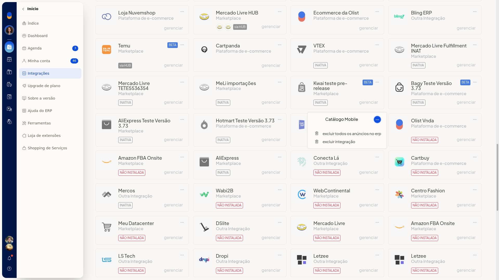

Status da integração e reconexão
Em Minhas Integrações, o card de cada integração mostra o status. Com a integração já conectada, Gerenciar abre a aba Conexão, onde você confere o status conectada e pode reabrir Conectar Integração para reconectar.
No iFood Mercado, a reconexão usa um Código de Acesso. A área de integrações também avisa quando lojas foram desconectadas e precisam autorizar de novo.
Importante
- No iFood Mercado, o código de acesso vale 5 minutos depois de gerar o código e autorizar o Olist ERP.
- A troca da chave de acesso do iFood desconectou algumas lojas. A chave já foi atualizada no ERP da Olist. A loja desconectada precisa autorizar novamente a integração com o iFood para restabelecer a conexão.
- A lista não tem um botão com o nome reconectar. A reconexão passa por Gerenciar no card e por gerenciar na aba Conexão.
- No menu de ações do card, as opções são Excluir todos os anúncios no ERP e Excluir integração. Não há ali instalar, conectar ou reconectar.
Instruções
-
Acesse Início > Integrações.
-
Em Minhas Integrações, confira o status no card. Os rótulos exibidos são NÃO CONECTADA, NÃO INSTALADA, INATIVA e conectada.


-
No card da integração já conectada, clique em Gerenciar. No iFood Mercado, o card mostra o status conectada.
-
Na aba Conexão, confira o distintivo conectada e o campo Nome da integração no ERP. O campo não tem marcador de obrigatório. A aba também mostra o botão Salvar.

-
Clique em gerenciar.
-
Em Conectar Integração, confira Nome da integração no ERP e Identificador da loja, já preenchido. O campo Código de Acesso começa vazio e não tem marcador de obrigatório. A tela mostra gerar código de acesso e conectar com iFood Mercado. A ajuda informa que o código vale 5 minutos depois de gerar o código e autorizar o Olist ERP. Gere o código, autorize o ERP da Olist, digite o Código de Acesso nesse prazo e use conectar com iFood Mercado.


Resultado
A aba Conexão de uma integração já conectada exibe o distintivo conectada. Ao reabrir a reconexão do iFood Mercado, o formulário mostra o Identificador da loja e o Código de Acesso antes da confirmação da conexão.
Informações adicionais
O status muda o que Gerenciar abre
- No card NÃO CONECTADA, Gerenciar abre Conectar Integração.
- No card conectada, Gerenciar abre a aba Conexão com o distintivo conectada.
- No card NÃO INSTALADA da Olist Vnda, Gerenciar abre a aba Conexão com as credenciais de acesso para cópia.
O menu do card não reconecta
No menu de ações do card, inclusive com status NÃO CONECTADA ou NÃO INSTALADA, só aparecem Excluir todos os anúncios no ERP e Excluir integração.


Voltar na reconexão do iFood
A partir da reconexão do iFood, o primeiro Voltar permanece na aba Conexão. O segundo Voltar retorna a Minhas Integrações.